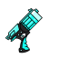
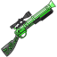
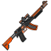
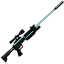

Making custom maps¶
All the maps in Cyber Team Zero are located in the aptly named Maps folder.
Making custom maps for Cyber Team Zero is very easy. As the more observant competitor will have noticed, each map consists of two files - a .png and a .nac file.
In order to make your own map, you must first create the PNG. The .nac (the navigation cache) will be generated by the Map Compiler.
The PNG¶
The PNG consists of a very simple format - each pixel represents a single tile. The different colours are different tile types. Note that the alpha channel has a special purpose.
| R, G, B | Color Name | Tile function | Tile Image |
| 0, 0, 0 | Black | Wall | |
| 255, 255, 255 | White | Floor | |
| SEE BELOW | Yellow | Amber Spawn | |
| SEE BELOW | Blue | Blue Spawn | |
| 128, 128, 128 | Grey | Control Point (Neutral) | |
| 255, 0, 0 | Red | Mainframe (Amber) | |
| 0, 255, 0 | Green | Mainframe (Blue) |
Amber and Blue spawn points¶
The spawn points for Alpha, Bravo, Charlie, and Delta are individually color coded for each team. This is designed to enforce perfect symmetry in symmetrical maps.
The spawn point color codes are listed here.
| R, G, B | Team | Call Sign |
| 255, 255, 0 | Amber | Alpha |
| 255, 255, 50 | Amber | Bravo |
| 255, 255, 100 | Amber | Charlie |
| 255, 255, 150 | Amber | Delta |
| 0, 0, 255 | Blue | Alpha |
| 0, 50, 255 | Blue | Bravo |
| 0, 100, 255 | Blue | Charlie |
| 0, 150, 255 | Blue | Delta |
Pick-ups¶
The alpha channel is used to indicate the type of pick up to put on the tile.
An alpha value of 255 indicates no pick up.
| Alpha | Pick up Name | Pick up Image |
| 1 | Repair Kit | |
| 2 | Blaster |  |
| 3 | Scatter Gun |  |
| 4 | Laser Rifle |  |
| 5 | Rail Gun Sniper |  |
| 6 | Shield |
Note
Pickups can technically be placed inside walls. Although this would be a great way to confuse naive AI, no maps like that will be used in the tournament.